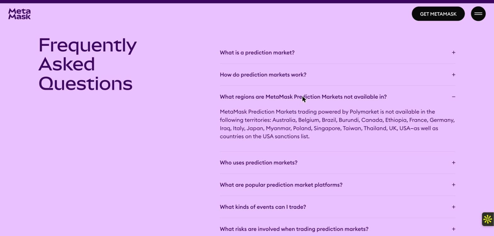
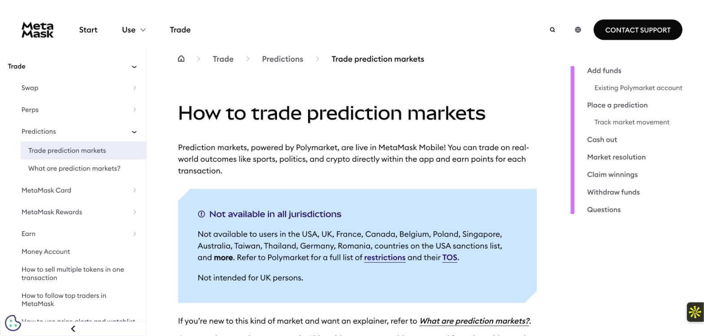
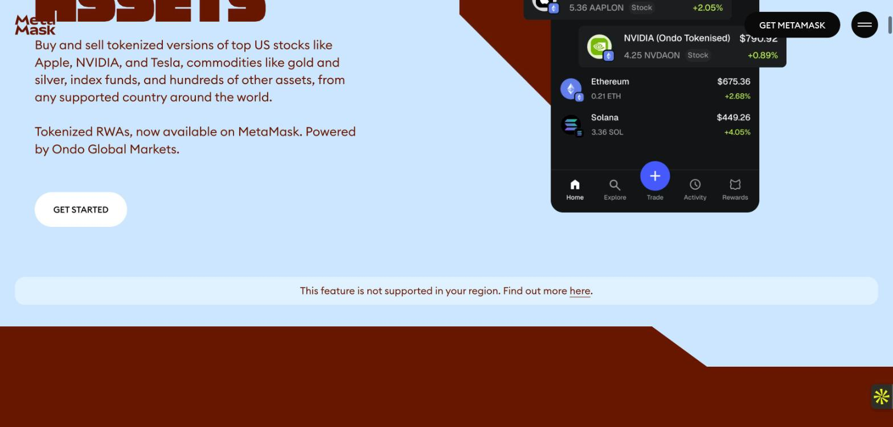
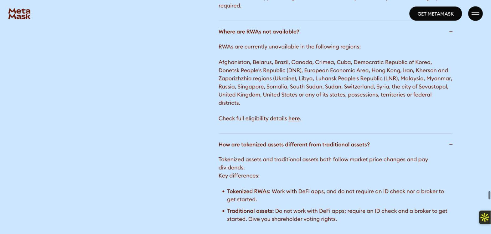
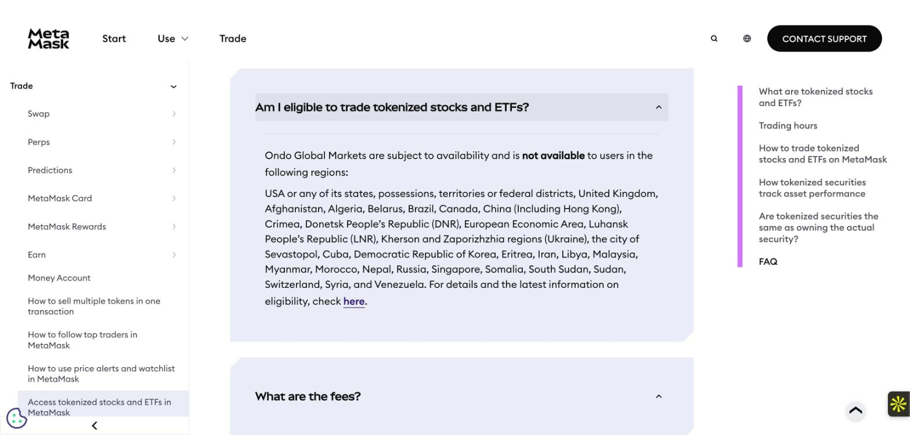
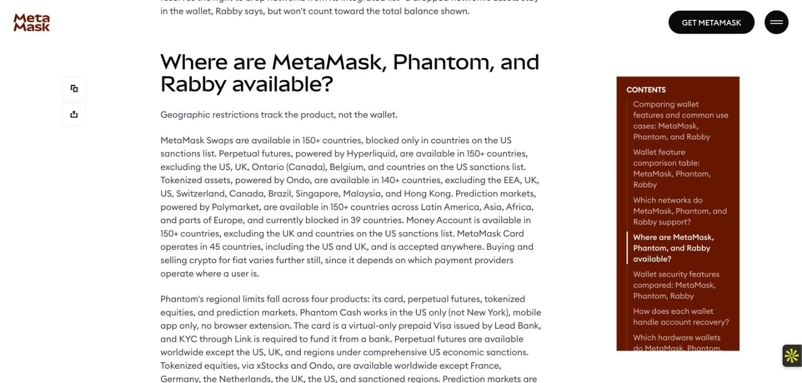

A brief for MetaMask
James Praise · Marketing and GTM Operator
Prepared for MetaMask's Product Marketing Director. I wrote it from public pages only, read in Chrome on 5 October 2026. I did not test the app. Each claim links to its source, screenshots show where two pages disagree, and the last section lists what I could not confirm from outside.
MetaMask's pages for swaps, perps, prediction markets and tokenized stocks each say where the product is available. They do not say the same thing. The two prediction market pages name different blocked countries. The two tokenized stock pages do the same. Neither pair matches the third-party page it points to for the latest list. The homepage Trade section carries no regional wording at all.
This brief puts the four products on one map for 25 countries, marks every cell where the sources split, and uses the map to set a launch order that starts in Nigeria.
| What | One source says | Another source says | Why it matters |
|---|---|---|---|
| Prediction markets, blocked countries | The support page names 12 countries, then "countries on the USA sanctions list, and more." Romania is on this list only. | The product page FAQ names 18 countries plus sanctioned countries. Brazil, Burundi, Ethiopia, Iraq, Italy, Japan and Myanmar are on this list only. | A user in Brazil, Ethiopia or Japan reads the support page and sees no warning. A user in Romania reads the product page and sees none. |
| Prediction markets, the venue's own list | Both MetaMask pages tell readers to check Polymarket for the full list. | Polymarket's documentation names 34 countries and territories as close-only (users can close positions but not open new ones) and 5 more on its own website only. Ireland, Malta (sports only), the Netherlands, New Zealand, Slovakia and South Korea are on it and on neither MetaMask page. It lists four Canadian provinces, where both MetaMask pages say Canada. | The full list lives off MetaMask's pages, and it is longer than either one. |
| Prediction markets, how many countries | The comparison post of 29 September says predictions are "currently blocked in 39 countries." | The product page names 18 and the support page names 12. Neither prints a sanctions list. | I could not reproduce 39 from any page. |
| Prediction markets, the fee | The product page FAQ says "a 4% transaction fee." | The support page lists a fixed 4% fee plus a variable taker fee of 0% to 7%, set by Polymarket. | A reader of the product page expects 4% in total. |
| Tokenized stocks, unavailable countries | The product page FAQ lists 26 entries, with Hong Kong named. | The support page lists 31 entries. It adds Algeria, China, Eritrea, Morocco, Nepal and Venezuela. | A user in Morocco or Algeria gets a different answer from each page. |
| Tokenized stocks, the page both cite | Both MetaMask pages link Ondo's eligibility page for the latest list. | Ondo's page does not name Algeria, China, Eritrea, Morocco, Nepal or Venezuela. It treats Brazil, the European Economic Area (EEA), Hong Kong, Malaysia, Singapore, Switzerland and the UK as restricted, with access for qualified, professional or accredited investors, and for institutions only in Switzerland. | The six extra countries on the support page come from a source I could not find. |
| Tokenized stocks, one page, two claims | The product page says "from any supported country around the world" and "US markets, now available to anyone." | The same page carries the line "This feature is not supported in your region" and a list of 26 unavailable places. | The headline promise and the footnote point in opposite directions. |
| What | Sources |
|---|---|
| How many perps markets | The product page says "150+ tokens," plus US equities, commodities and currencies. The support page says "over 180." The comparison post says "270+ assets." |
| How many tokenized assets | The product page headline says "400+ ways to invest" and its FAQ on the same page says "200+ RWAs." The comparison post says "400+." The support page says "hundreds." |
| Perps fee | The comparison post says "no MetaMask fee." The support page shows a total taker fee of 0.1432% at Rewards levels 1 to 3, with no split between Hyperliquid and MetaMask. |
| Money Account yield (outside Trade) | The homepage says "Earn up to 4%." The comparison post says "up to 6% APY." |
Each image below was captured on 5 October 2026 and sits next to the row it supports.






"Open" means the country is on no excluded list in any source I read. It does not mean I tested the app. "Split" means at least one source blocks the country and at least one does not. Swaps are marked open because the comparison post says swaps are "blocked only in countries on the US sanctions list." No swaps page I read names a single country, on the product page or in the support guide. I treat Germany, France and Romania as inside the EEA. That is my assumption, since no page lists the members.
| Country | Swaps | Perps | Predictions | Tokenized stocks | What decides it |
|---|---|---|---|---|---|
| Nigeria | Open | Open | Open | Open | On no list in any source. |
| Ghana | Open | Open | Open | Open | On no list in any source. |
| Kenya | Open | Open | Open | Open | On no list in any source. |
| South Africa | Open | Open | Open | Open | On no list in any source. |
| Argentina | Open | Open | Open | Open | On no list in any source. |
| Mexico | Open | Open | Open | Open | On no list in any source. |
| Philippines | Open | Open | Open | Open | On no list in any source. |
| Vietnam | Open | Open | Open | Open | On no list in any source. |
| India | Open | Open | Open | Open | On no list in any source. |
| Turkey | Open | Open | Open | Open | On no list in any source. |
| United Arab Emirates | Open | Open | Open | Open | On no list in any source. |
| Ethiopia | Open | Open | Split | Open | Product page and Polymarket block predictions. Support page does not. |
| Morocco | Open | Open | Open | Split | Support page blocks tokenized stocks. Product page and Ondo do not name it. |
| Brazil | Open | Open | Split | Blocked | Product page and Polymarket block predictions. Support page does not. Both pages block tokenized stocks. |
| Japan | Open | Open | Split | Open | Product page blocks predictions. Support page does not. Polymarket's website is close-only. |
| South Korea | Open | Open | Split | Open | Neither MetaMask page names it. Polymarket's website is close-only. |
| Romania | Open | Open | Split | Blocked | Support page alone blocks predictions. Tokenized stocks blocked as EEA. |
| Thailand | Open | Open | Blocked | Open | Named for predictions on both pages and by Polymarket. |
| Australia | Open | Open | Blocked | Open | Blocked for predictions everywhere. Named on no tokenized stock list. |
| Singapore | Open | Open | Blocked | Blocked | Named on every list. |
| Germany | Open | Open | Blocked | Blocked | Named for predictions. Tokenized stocks blocked as EEA. |
| France | Open | Open | Blocked | Blocked | Named for predictions. Tokenized stocks blocked as EEA. |
| Canada | Open | Ontario only | Blocked | Blocked | Perps blocked in Ontario only. Both prediction pages say Canada. |
| United Kingdom | Open | Blocked | Blocked | Blocked | Named on every list. Perps and predictions pages say "Not intended for UK persons." |
| United States | Open | Blocked | Blocked | Blocked | Named on every list. |
The perps column rests on two pages that agree: the product page and the support page both exclude the USA, UK, Ontario, Belgium and sanctioned countries.
Nigeria, Ghana, Kenya, South Africa, Argentina, Mexico, the Philippines, Vietnam, India, Turkey and the United Arab Emirates. This is the only group where the Trade section can show all four products without a footnote, and it is the group where one screen carries four price tags. A swap shows gas fees in the quote. A perps market order costs 0.1432% at Rewards levels 1 to 3. A tokenized stock costs 87.5 basis points (0.875%). A prediction costs 4% plus a variable fee of up to 7%. A user who sees all four will compare them, so the message for this group is a cost explainer on the Trade screen before it is a feature launch for any one product.
Lifecycle follows what the user has already done. A holder who swaps is shown perps or tokenized stocks next. Predictions are live on MetaMask Mobile, while perps and tokenized stocks run on mobile and the extension, so an extension-only user never receives a predictions message. The predictions message leads with what the support page already says: pay with any Ethereum Virtual Machine (EVM) token, no need to hold Polygon's POL token, and MetaMask covers the fee to claim winnings and withdraw. It states the 4% and the variable fee in the same breath.
Thailand and Australia get swaps, perps and tokenized stocks. Singapore, Germany and France get swaps and perps. Predictions never appear in an email, an ad or a push message for any of them, because every source blocks them. Tokenized stocks stay out for Singapore, Germany and France too. The lead product is perps for experienced traders and swaps for everyone else, and the leverage explainer sits in front of the first perps screen. Australia is the useful test case. Every source blocks predictions there and none blocks tokenized stocks, so it is the cleanest place to prove the tokenized stock message on its own.
Ethiopia, Morocco, Brazil, Japan, South Korea and Romania. The rule for this group is conservative. If any page names the country for a product, that product stays out of lifecycle and paid until Product and Legal say which page is right. That costs a few impressions. Promoting a blocked product costs more, because the support page says restricted users may notice that "trades are blocked at checkout." Brazil is the first row to settle, because the product page, Polymarket and both tokenized stock pages all block something there.
The United Kingdom, the United States and Canada. Swaps lead. Perps run in Canada outside Ontario, though I could not confirm that from any page beyond the Ontario exclusion. The comparison post says it is "not for UK audiences" and the perps and predictions pages say "Not intended for UK persons," so UK copy stays at the level of swaps and wallet features. No Trade campaign for this group names a product the country is blocked from.
I used the method from Reform's Feature Launch Plan Framework: a priority matrix to pick the order, then a channel map for each wave. The matrix has four tests. How many products are open, where more is better. Whether the sources agree, where agreement goes first. The language the team can run the market in. Whether Trade has measurable users there. The last test needs MetaMask data that I do not have, so the order below rests on the first three.
| Wave | Countries | Why this order | Work |
|---|---|---|---|
| 0, weeks 1 to 2 | None. Internal. | Every later wave depends on one answer to "where is each product available." | Write one availability table that Product and Legal own. The support site, the product pages and the comparison post all read from it, and lifecycle and paid pull their exclusions from it. Settle the Group 3 rows first. |
| 1, weeks 3 to 8 | Nigeria | All four products clear on every source. English-language. I live in Lagos, so I can test the flows in the market and read the replies. | A cost explainer on the Trade screen. A tokenized stock first-trade flow written around the real steps: swap USDC on Ethereum or USDT on BNB Chain, with a $5 minimum. A perps leverage explainer shown before the first leveraged trade. Predictions to mobile users only, with the full fee in the headline. Education content and two or three creators, briefed on the exclusions list, as the job description asks for "particularly among emerging market segments." |
| 2, weeks 9 to 12 | Ghana, Kenya, South Africa | Same footprint as Nigeria and the same language, so the Wave 1 assets move with local examples swapped in. | Reuse the Nigeria explainers. Run the same two tests before spending more. |
| 3, weeks 13 to 20 | Philippines, Vietnam, India, Turkey, the United Arab Emirates, Argentina, Mexico | All four open on every source, but each needs a local language or a local partner. This wave also covers the Asia audience the job description names. | Translate the cost explainer first. Add local creators only where Waves 1 and 2 show the education content moves first trades. |
| 4, after Wave 0 closes | Group 3 | Cannot start before Legal settles which list wins. | Run product by product launches for whichever countries clear. |
Channel map for Nigeria. In the app, mobile cards on the Trade screen and a message at the funding step, because the funding step is where each product asks for something different. By email, lifecycle flows split by which products a user has already tried. In education, a plain explainer for each fee and for liquidation, written for someone deciding with their own savings. In community and with creators, short briefs that list what each product is, what it costs and where it is blocked, so no creator promises predictions in a country that blocks them.
I have no baselines. Week 2 produces them, and the targets get set from them.
Leading measures, checked every two weeks:
Lagging measures, checked at day 30 and day 90:
Every baseline above needs MetaMask's analytics data. I do not have it.
Why it is built this way
I read each page in Chrome on 5 October 2026, opened every collapsed FAQ item, and saved a screenshot wherever two pages disagree. The disagreement table came before the matrix, because the matrix is only worth trusting where the sources agree. The group rules follow from the table. A country is only as open as the most cautious page says it is, until MetaMask decides otherwise.
The brief is outside-in. It does not claim to know what MetaMask's Legal or Product teams have already decided, and it names the places where only they can say.